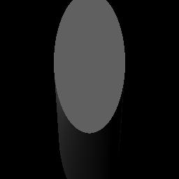
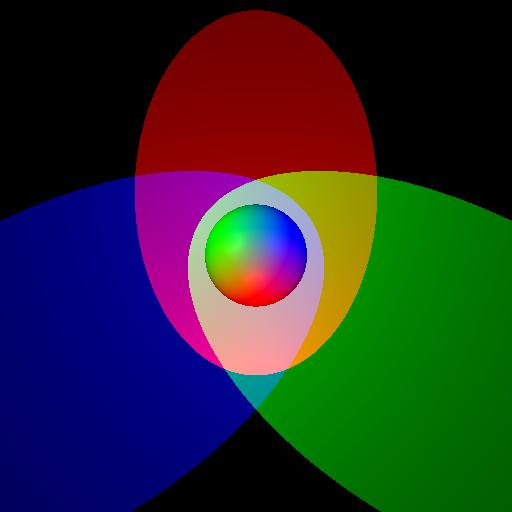

| Command | No Optimization | Bounding box optimization |
| raypro hierarchy.scn out.jpg -width 512 -height 512 | 5.643 sec | 4.74 sec |
| raypro transform.scn out.jpg -width 512 -height 512 | 6.713 sec | 5.556 sec |
| raypro dinopet_reflect.scn out.jpg | 679.473 sec | 40.188 sec(!!) |
| raypro sphere.scn sphere.jpg | raypro cube.scn cube.jpg | raypro teapot.scn teapot.jpg |
|  | ||
| raypro cylinder.scn cylinder.jpg | raypro skewcylinder.scn skewcylinder.jpg | raypro cone.scn cone.jpg |
|
||
| raypro hierarchy.scn hierarchy.jpg | raypro transform.scn transform.jpg -width 512 -width 512 | raypro materials.scn materials.jpg -width 1000 -height 1000 |
|  |
| raypro spotlight.scn spotlight.jpg -width 512 -height 512 |
R2Pixel GetTextureColor(R3Intersects* hit)
| raypro checker_sphere.scn checker_sphere.jpg -width 512 -height 512 |
| raypro checker_cylinder.scn checker_cylinder.jpg -width 512 -height 512 |
| raypro checker_cone.scn checker_cone.jpg -width 512 -height 512 |
| raypro checker_box.scn checker_box.jpg -width 512 -height 512 |
 |
||
| raypro forShadow.scn forShadow.jpg | raypro forShadow2.scn forShadow2.jpg | raypro forShadow3.scn forShadow3.jpg |
| raypro dinopet_reflect.scn dinopet_reflect.jpg | raypro dinopet_reflect2.scn dinopet_reflect2.jpg (I changed the direction of the light here, so the shadow is different) |
| raypro transmission.scn transmission.jpg |
 |
 |
|
| 1 | 1.05 | 1.1 |
| 1.2 | 1.5 | 1.8 |
| Operation | Points |
| Generate a ray for each pixel | 1 |
| Intersect a ray with a sphere | 1 |
| Intersect a ray with an axis-aligned box | 1 |
| Intersect a ray with a triangle mesh | 2 |
| Intersect a ray with an axis-aligned cylinder | 2 |
| Intersect a ray with an axis-aligned cone | 2 |
| Intersect a ray with a scene | 1 |
| Handle scene traversals with modeling transformations | 1 |
| Accelerate ray-scene intersection with bounding box checks | 1 |
| Phong Illumination | 2 |
| Texture mapping | 1 |
| Shadow Rays | 1 |
| Specular Reflection | 2 |
| Transmission | 1 |
| Refraction | 2 |
| Make an interesting scene | 1 |
| Art Contest Submissions | 1 |
| Total | 23 |